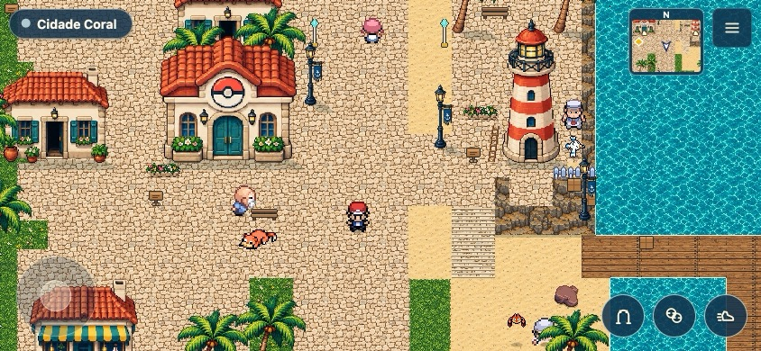
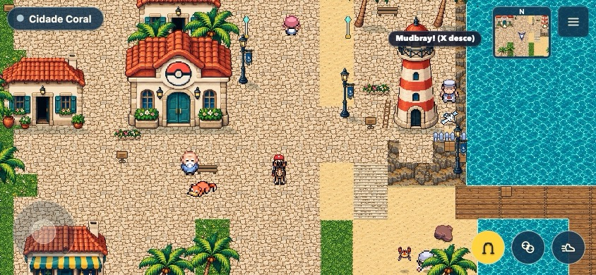
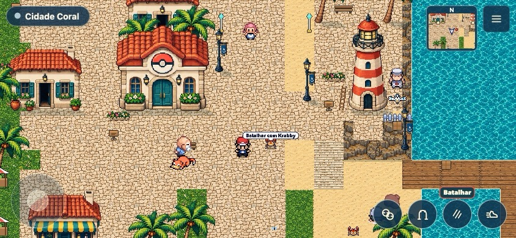
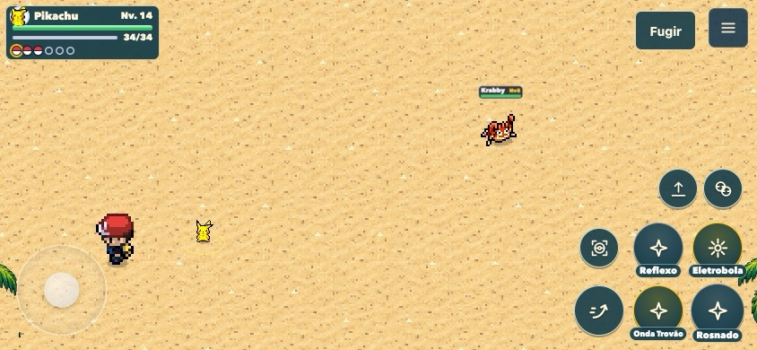
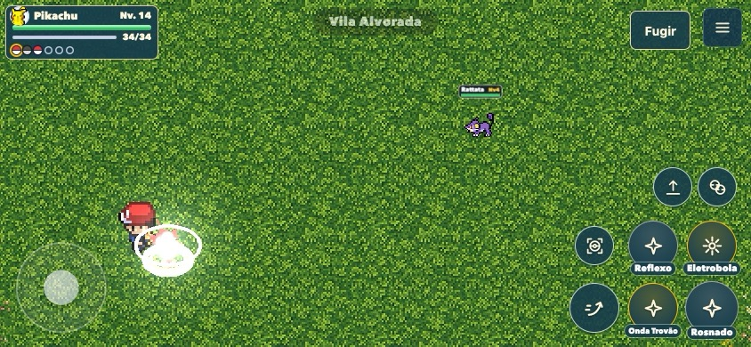
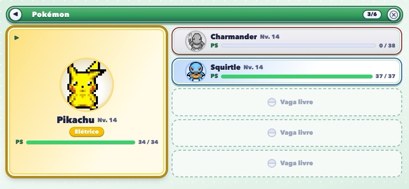
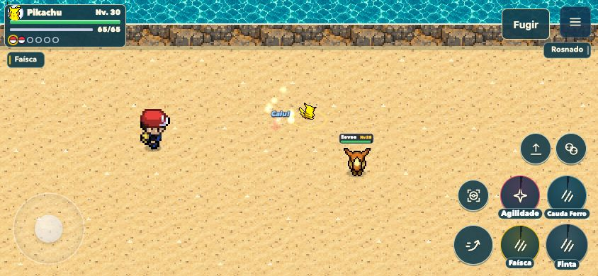
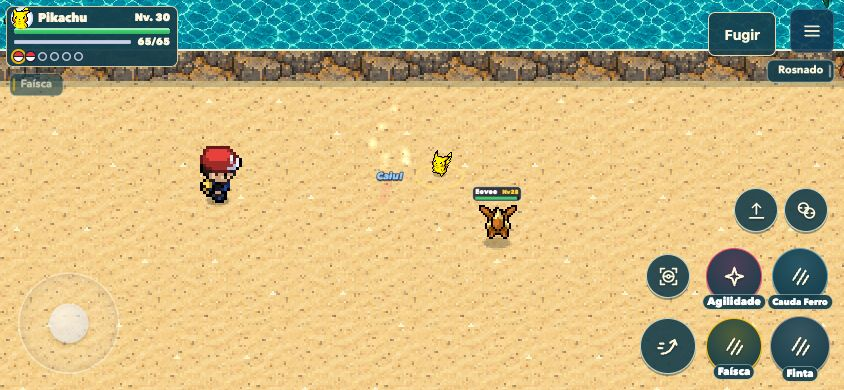
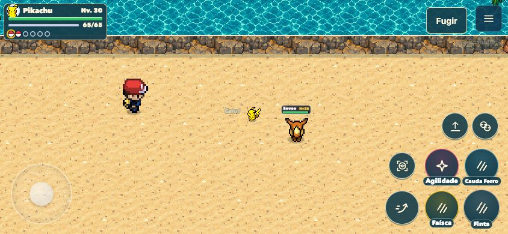
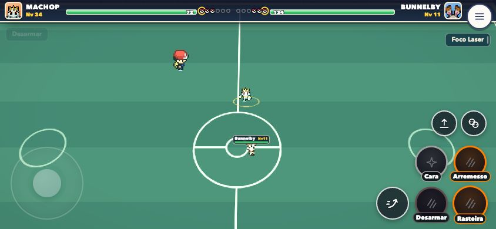

Acabamento de exploração e batalhas
Sprites originais, proporção dos treinadores ajustada na arena e botões menores e próximos. Batalhar envia o Pokémon diretamente; Capturar fica disponível na arena selvagem. Ao terminar ou fugir, o Pokémon volta à Poké Bola.
Jogar Alvorada · Relatório desta versão
Capturas reais em 844×390. Validação física em iPhone/Safari ainda pendente.

Cidade Coral e controles de exploração
Montaria restaurada
Entrada direta na batalha
Arena de praia: controles compactos e captura
Clareira com o mesmo padrão visual
Equipe em 844×390
Batalha selvagem em ação — quadro 1
Batalha selvagem em ação — quadro 2
Batalha selvagem em ação — quadro 3
Controles compactos também no ginásio